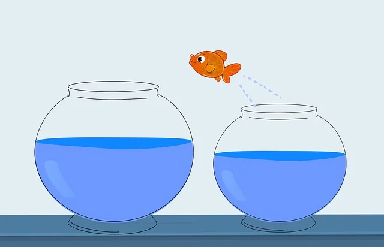
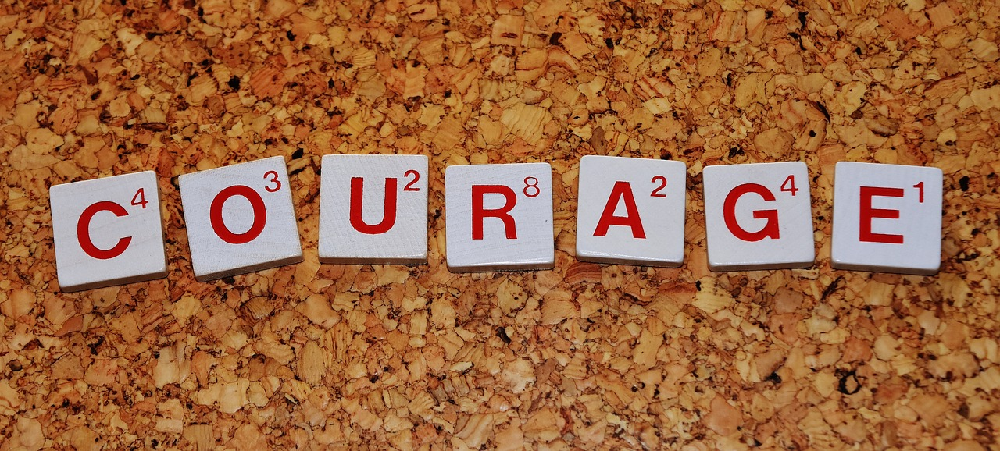

hover über Photos
Mut:
Es geht darum, sich der Angst und dem Unbehagen zu stellen, um ein voll engagiertes und authentisches Leben zu führen.

Arten von Mut:
Die 5 Arten von Mut sind:
körperlicher,
moralischer,
sozialer,
intellektueller
und emotionaler
Mut.
Folgen des Mutes:
Mut führt zum Glück, indem er persönliches Wachstum fördert, Widerstandsfähigkeit aufbaut und Beziehungen durch Verletzlichkeit und Ehrlichkeit verbessert.

Charakterstärken:
Charakterstärken im Zusammenhang mit Mut sind
Tapferkeit,
Ausdauer,
Ehrlichkeit und
Lebensfreude.